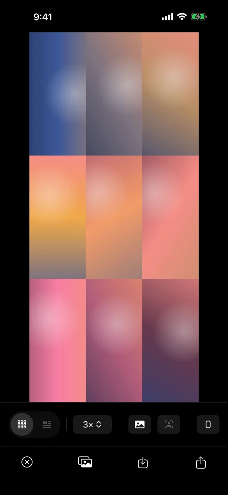
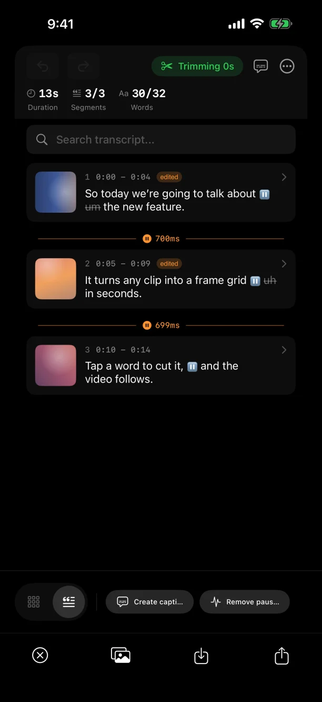
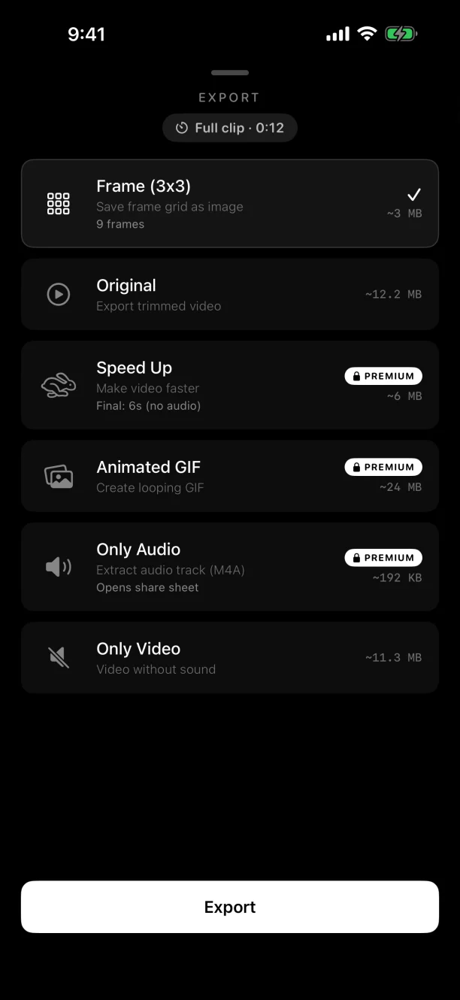
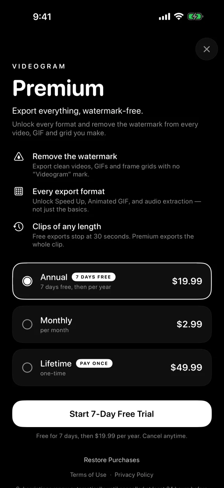
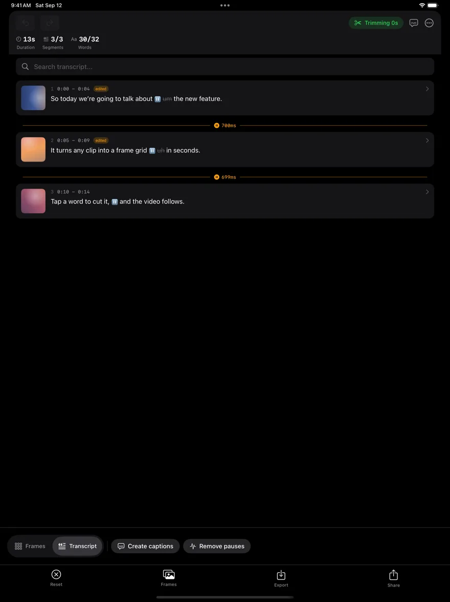
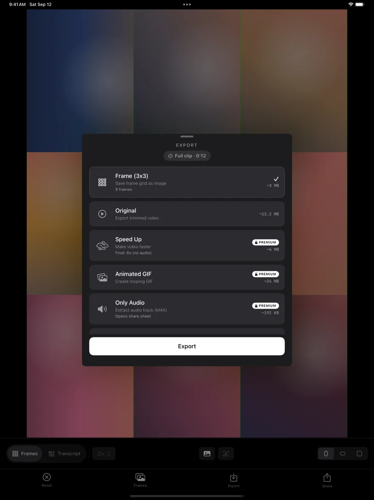

Videogram
Film with both cameras or talk over any video. Pick the layout afterwards — and edit by transcript.
For iPhone and iPad · Free to start
Film with both cameras or talk over any video. Pick the layout afterwards — and edit by transcript.
For iPhone and iPad · Free to start
Record the front and back cameras at the same time — you and what you're showing. Nothing to decide while you shoot: pick where your face goes afterwards, switch layouts with a cut or a glide, or let the layout follow your speech.
Pick a screen recording or a clip from your trip and record your face and voice while it plays. Your bubble sits right under the camera, so you look at the lens. Turn the video's own sound off if it distracts you, or keep it dipped under your voice.
Videogram finds the silent gaps and tightens your clip, keeping a natural, human-sounding pace. Or speed them up instead, so hands-busy footage still reads.
Auto-generated captions that highlight one word at a time, in sync with your speech.
Your whole clip becomes text. Tap a word to remove it and the video cuts to match — no timeline scrubbing. Transcribes English, Italian, Spanish and French, entirely on your device.
One clip, every format — full video, sped‑up video, animated GIF, audio, or an extracted frame grid.
Shoot something new, pick one clip, or pick a handful of photos, Live Photos and clips from Photos or Files and stitch them into a single video. Videogram asks for camera or photo access only when you need it.
Real screens on iPhone and iPad — a frame grid, the transcript editor, the export presets, and Premium.






Recording, editing, transcription and background blur run on your iPhone or iPad — no accounts, no tracking. A video leaves your device only when you share it by link, and the link expires on its own.
Available in English, Italian, Spanish and French.
Free: every tool, with a small watermark and video exports up to 30 seconds. Premium removes the watermark, exports clips of any length and unlocks Speed Up, GIF and audio. The annual plan starts with a 7‑day free trial.